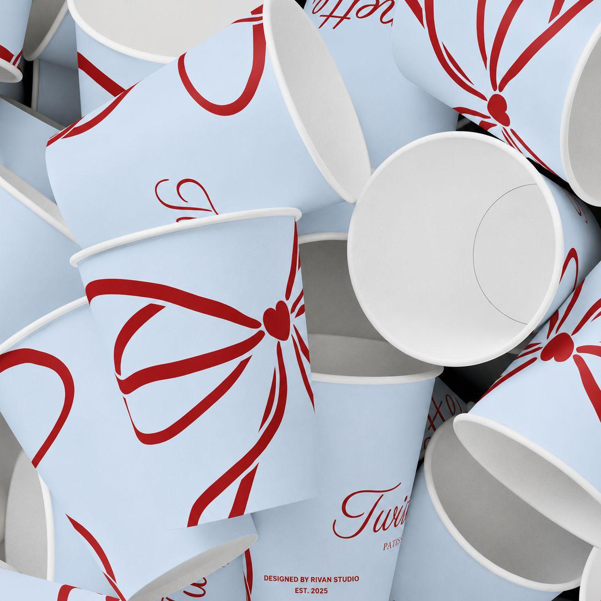
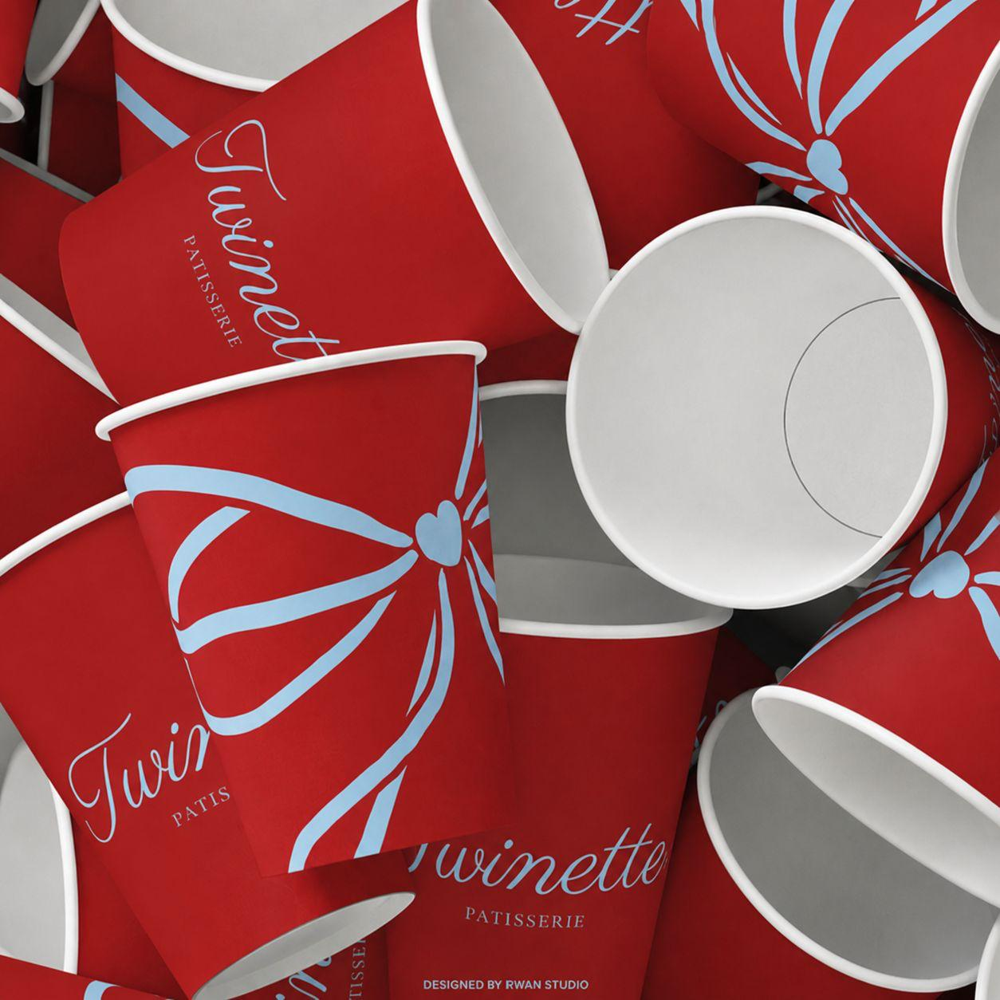
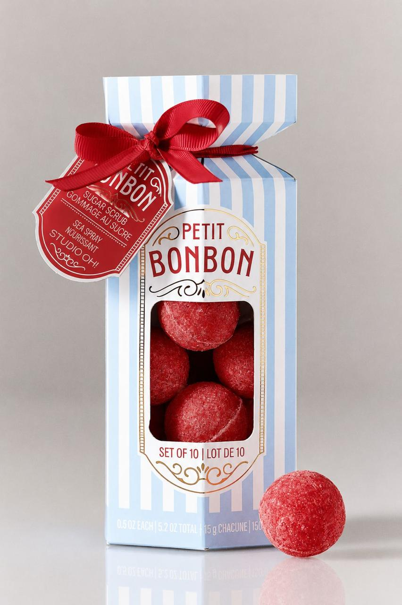
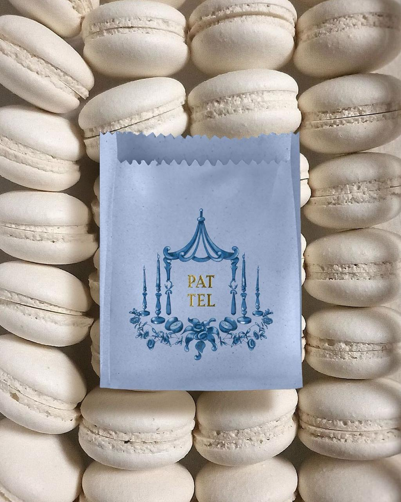
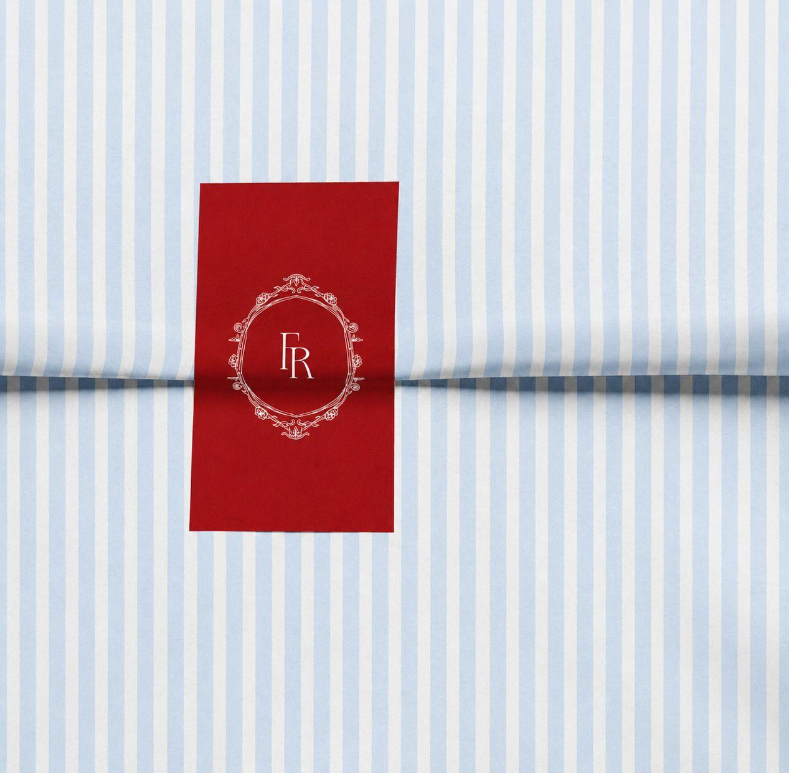
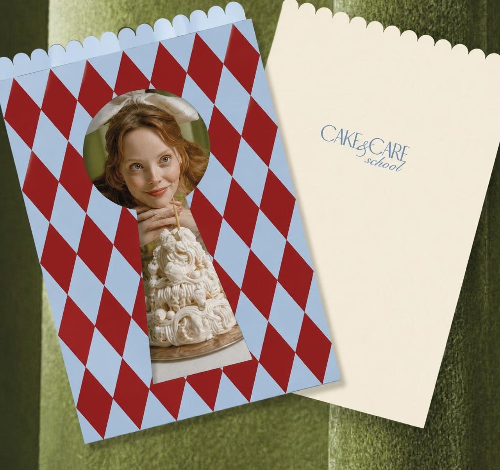
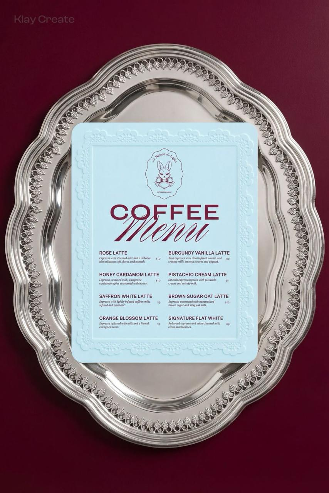
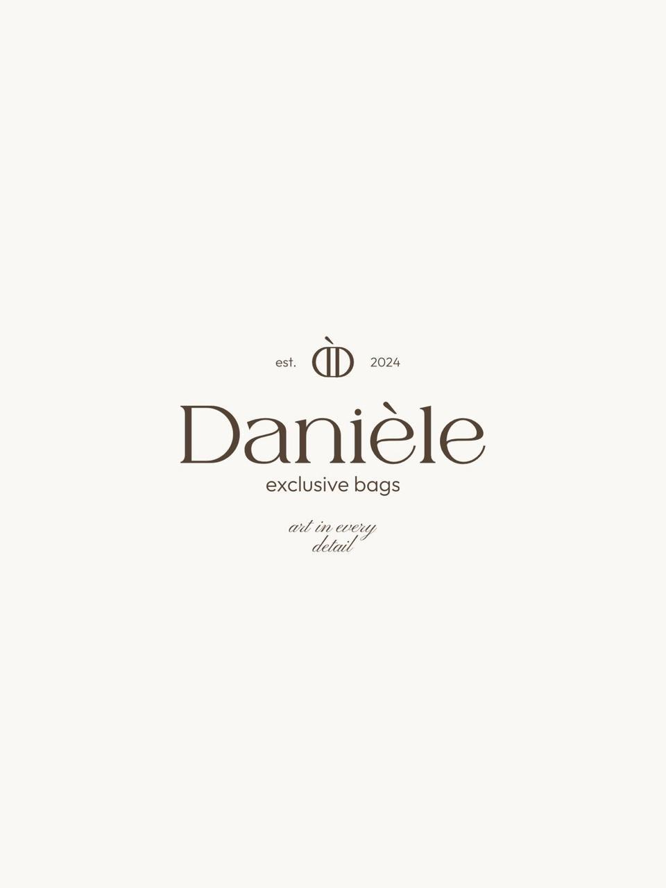
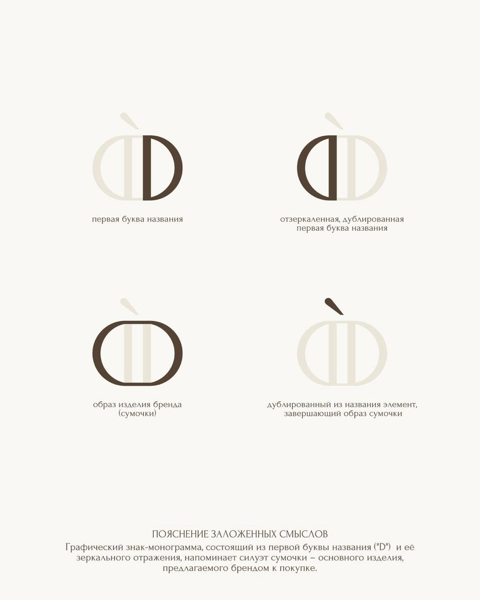

Образ современной кондитерской, вдохновлённой эстетикой европейских pâtisserie и французских кафе. Десерт здесь — не быстрый перекус, а особый момент удовольствия. Лёгкий. Красивый. Запоминающийся. Место, куда хочется возвращаться не только ради вкуса, но и ради атмосферы.

В основе — сочетание французской эстетики, винтажного шарма и современного графического дизайна. Мы вдохновлялись классическими европейскими кондитерскими, элегантной упаковкой, уютными кафе и атмосферой старых улочек Парижа — но не стремимся создать музейную историю.
Наоборот: современная типографика соседствует с декоративными деталями, яркие акценты работают вместе с воздушными пастельными оттенками, классические мотивы получают новое прочтение. Так рождается язык, который выглядит свежо, элегантно и эмоционально.
Символ качества, традиций и внимания к деталям — пас-серри как ремесло и стиль жизни.
Красивые коробки, ленты, банты, фирменная упаковка, которую хочется сохранить и подарить близким.
Лёгкость, изящность, деликатность и внимание к красивым мелочам.
Чистая композиция, выразительная типографика и узнаваемые фирменные элементы.
Стаканчики, коробки, наклейки, меню и полиграфия работают как единая система. Каждый носитель усиливает узнаваемость, а бант и лента становятся фирменным жестом. Бренд превращается из места покупки десертов в пространство красивых эмоций.

стаканы
подарок
пакет · макаруны
обёртка · монограмма
паттерн
менюНежно-голубой — лёгкость и воздушность. Насыщенный красный — эмоциональность, аппетит и энергия. Сливочный молочный — мягкость и натуральность. Шоколадный — премиальность и ремесленный характер. Вместе легко узнаются и хорошо работают и в упаковке, и в интерьере.

логотип
монограммаЛюди хотят фотографировать упаковку, дарить продукцию близким и возвращаться за ощущением, которое получили однажды. Мы создаём именно такой бренд — который дарит эмоции ещё до первого кусочка десерта.
Концепция объединяет сильные факторы: европейскую эстетику, премиальное восприятие, эмоциональную привлекательность, высокую узнаваемость упаковки и современный визуальный язык. Такой бренд легко масштабируется на новые точки и сохраняет целостность. Люди будут фотографировать упаковку, узнавать фирменные цвета и возвращаться снова. Потому что сильная кондитерская сегодня — это атмосфера, которая остаётся в памяти надолго.